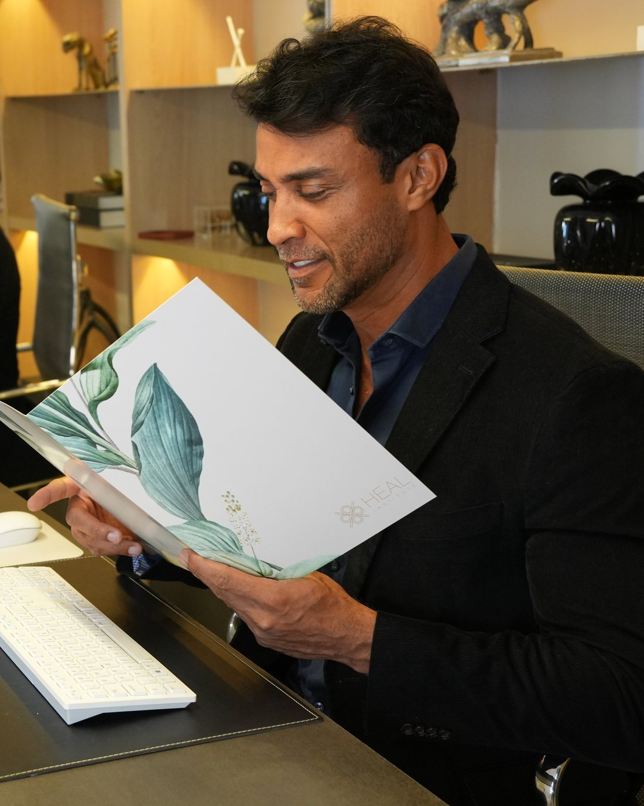

Salvador BA
Itaigara
Heal Institute
Agendar no Itaigara pelo WhatsApp, em nova abaWhatsApp: (71) 99998-5001
Dr. Bruno BarbosaMédico com atuação em Nutrologia
Mais anos de vida só importam se houver mais vida nesses anos.
Uma pergunta para o futuro
É para preservar essas possibilidades que a prevenção faz sentido.
Cuidado médico
Quero conhecer sua história, sua rotina, o que mudou e o que você espera para os próximos anos.
Exames, composição corporal, testes genéticos e wearables ajudam a enxergar melhor esse cenário e acompanhar sua evolução.
A tecnologia amplia o que podemos ver.
Mas é a sua história que dá sentido aos dados.

Dr. Bruno Barbosa
Na minha atuação em Nutrologia, quero entender o que pode melhorar sua saúde e sua qualidade de vida agora — mais disposição, força, sono, equilíbrio metabólico e bem-estar.
Conheça minha formaçãoExperiências de cuidado
“Não cheguei buscando emagrecer. Cheguei buscando entender por que meu corpo parecia resistir a tudo que eu tentava. O que encontrei foi uma abordagem que olhou para mim como um conjunto — não só para a balança.”
“Minha principal queixa era indisposição. Saía do trabalho sem energia para mais nada. Em três meses de acompanhamento entendi o que estava acontecendo no meu organismo — e o que fazer com isso.”
“42 quilos a menos. Nunca imaginei chegar nessa idade tão bem. Toda a minha família tem obesidade — e eu consegui sair dela. Estou muito feliz e grato por tudo isso.”
Relatos individuais. Experiências e resultados variam de pessoa para pessoa.
Agendamento
Escolha a unidade mais conveniente para você. A equipe orienta sobre a consulta e informa os horários disponíveis pelo WhatsApp.
Salvador BA
Itaigara
WhatsApp: (71) 99998-5001
Salvador BA
Paralela
WhatsApp: (71) 99998-5001
São Paulo SP
WhatsApp: (11) 97243-0562
Hoje (e nos próximos anos)
Um acompanhamento médico para cuidar da sua saúde, disposição e capacidade física hoje, construindo bases para um envelhecimento mais saudável.